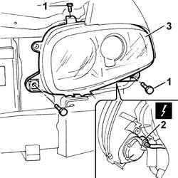

5540B76 FRONT LIGHT CLUSTER WITH FOGLAMP ONE LH OR RH R R WITH INTERFERING PARTS REMOVED
- Path
- Procedures > 55 ELECTRICAL EQUIPMENT > 5540 EXTERIOR LIGHTING > 5540B HEADLAMPS > 5540B76 FRONT LIGHT CLUSTER WITH FOGLAMP ONE LH OR RH R R WITH INTERFERING PARTS REMOVED
- Kind
- repair procedure (removal / refitting; the operation number is the code)
- Applies to
- all engines; all production periods
- Interactive page
- https://sloeber94.github.io/elrnDB-aGt/en/#/125001664
Applies to: engines: 2.0 JTS, 3.2 V6, 1.9 JTD 16V; all production periods; only with equipment: Xenon Gas headlamps
 Removing
Removing
 Refitting
Refitting1. Undo the bolts fixing the light cluster.
2. Move the light cluster slightly and disconnect the electrical connection.
Name | Connector | |
|---|---|---|
2 | Left headlamp | See F10 LEFT HEADLAMP ( FRONT ) |
Name | Connector | |
|---|---|---|
2 | Right headlamp | See F11 RIGHT HEADLAMP |
3. Recover the light cluster.

Applies to: engines: 2.0 JTS, 3.2 V6, 1.9 JTD 16V; all production periods; only with equipment: Xenon Gas headlamps
Refitting
RemovingCheck that the lights cluster is not damaged.
Connect the electrical connection.
Name | Connector | |
|---|---|---|
- | Left headlamp | See F10 LEFT HEADLAMP ( FRONT ) |
Name | Connector | |
|---|---|---|
- | Right headlamp | See F11 RIGHT HEADLAMP |
Position the light cluster.
Tighten the bolts fixing the light cluster.
 | Fastening | Component | Ø | Value (daNm) |
|---|---|---|---|---|
- | Bolt | LIGHT CLUSTER | M6 | 08 |
Topics that link to this page (31)
- I01 SIDE LIGHTS/NO. PLATE LIGHTS NOT WORKING
- I05 DIPPED HEADLAMPS NOT WORKING
- I06 MAIN BEAM HEADLAMPS NOT WORKING
- I10 DIRECTION INDICATORS / HAZARD WARNING LIGHTS / NOT WORKING
- I20 FOG LIGHTS NOT WORKING
- I39 TURN SIGNALS DO NOT WORK WHEN HAZARD KEY IS PRESSED
- 1004B10 POWER UNIT WITH MANUAL GEARBOX - R + R
- 1016D20 LEFT CYLINDER HEAD – R.R. AND REPLACING GASKET
- 1016D24 RIGHT CYLINDER HEAD - R.R. AND GASKET REPLACING
- 1020D38 FLYWHEEL SIDE OIL SEAL - REPLACE
- 1020D51 CRANK SHAFT REAR MOUNT - APPLY SILICONE TO MATING SURFACES
- 1024B10 ENGINE FLYWHEEL - R + R FOR VERSIONS WITH MANUAL GEARBOX
- 1080B39 RIGHT CATALYTIC PRECONVERTER R R OR REPLACE CYLINDER HEAD GASKET
- 1084B34 CARTRIDGE ENGINE OIL FILTER SUPPORT - R + R
- 1088B20 ENGINE COOLING RADIATOR - R + R
- 1088E11 FANS WITH SINGLE ENGINE DUCT - R+R
- 1810A20 CLUTCH - R + R
- 1820A24 THRUST BEARING LINKAGE - R + R
- 2110A10 MANUAL GEARBOX AND DIFFERENTIAL - R + R
- 2110C22 GEAR INPUT SHAFT SEALS - R R
- 2710A35 INTERMEDIATE DRIVE SHAFT MOUNT - R R
- 3340B56 RIGID PIPE FROM HYDRAULIC CONTROL UNIT TO RIGHT FRONT BRAKE - R.R.
- 5040A64 PIPE FROM EVAPORATOR TO DEHYDRATING FILTER/ACCUMULATOR - R+R
- 5505C28 INTERGRATED ENGINE BAY AND ABS SYSTEM WIRING - R R
- 5530A10 ALTERNATOR - R+R
- 5540B44 DIPPED BEAM FOR ONE GAS DISCHARGE LIGHTING UNIT ONE LH OR RH R R
- 5540B47 BULB FOR MAIN BEAM ONE LH OR RH OF ONE GS DISCHARGE LIGHT CLUSTER RR WITH LIGHT CLUSTER REMOVED
- 5540B48 BULBFOR SIDE LIGHT OF ONE GAS DISCHARGE LIGHTING UNIT ONE LH OR RH R R
- 5540B74 LEFT FRONT LIGHT CLUSTER WITH FOGLAMP R R
- 5540B83 GRUPPO OTTICO ANTERIORE A SCARICA DI GAS CON INDICATORE DI DIREZIONE (UNO), SX O DX - S.R. A PARTICOLARI INTERFERENTI STACCATI
- 5540C40 MOTOR (1), LH OR RH, FOR CORRECTING/ALIGNING GAS DISCHARGE LIGHT UNIT R R